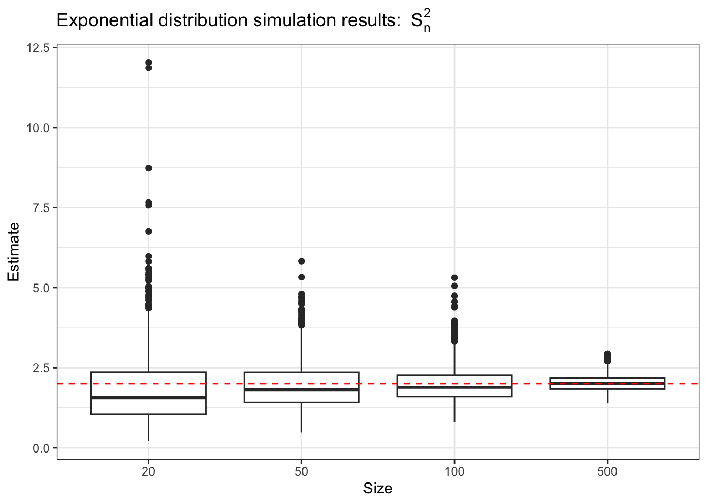
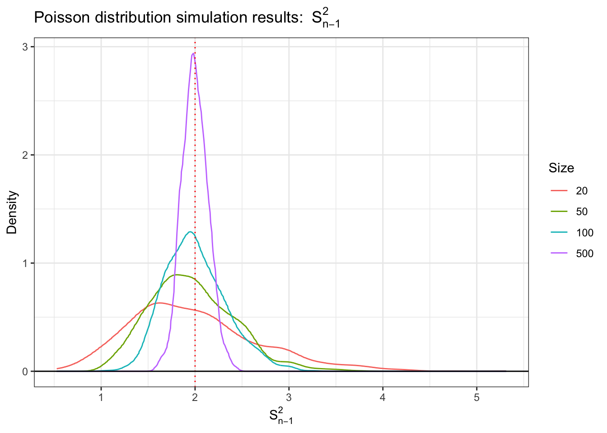
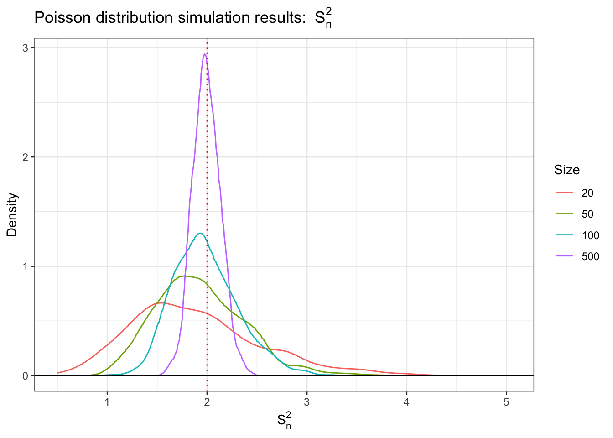
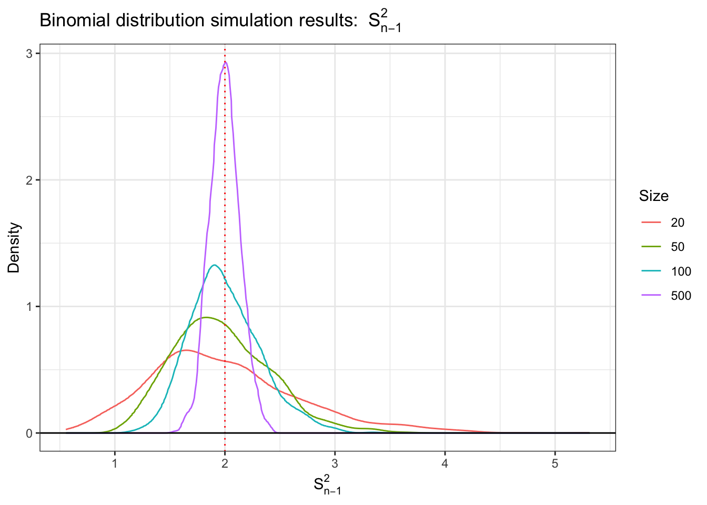
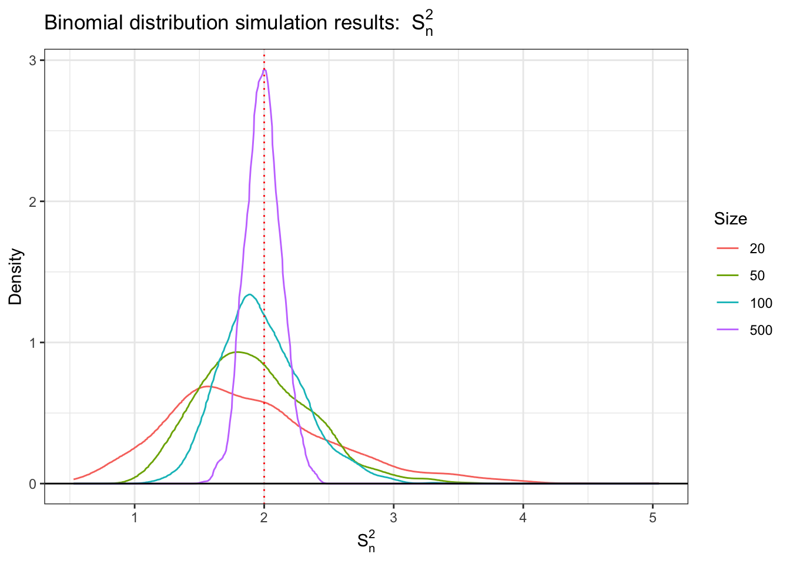
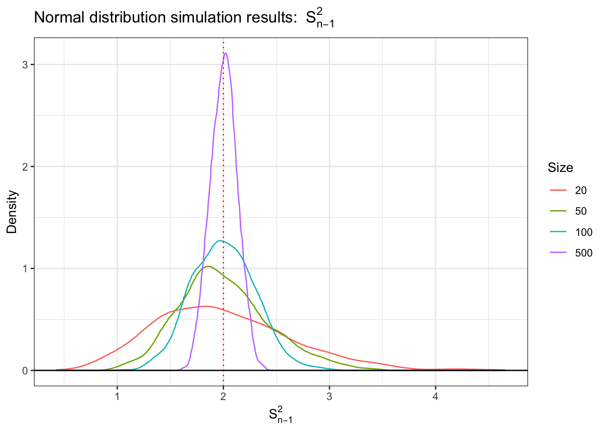
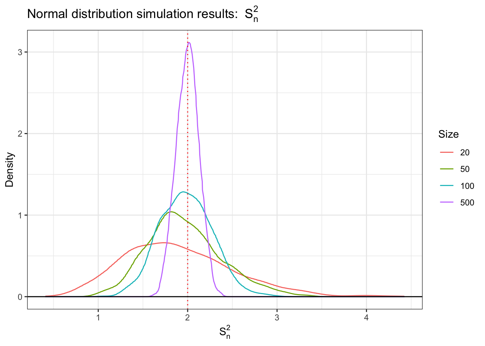
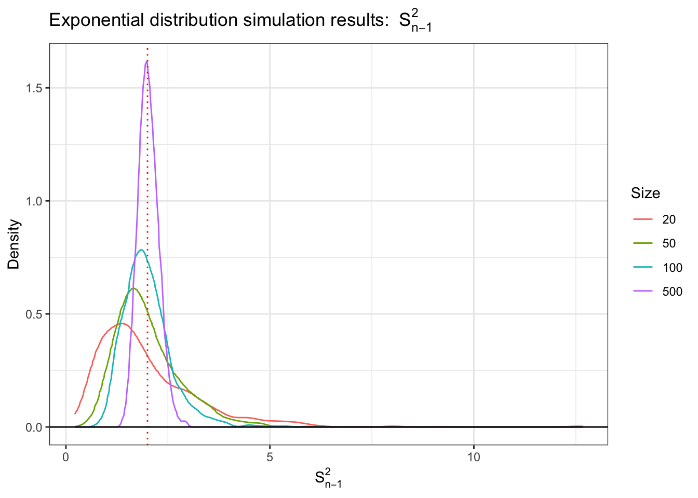
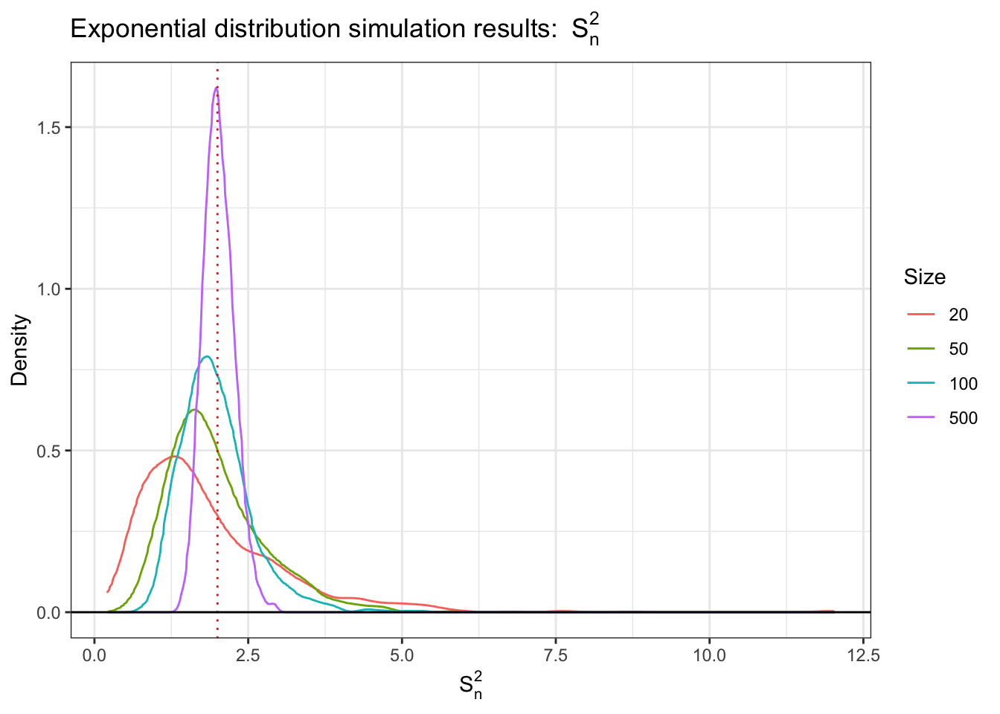

Complete the tasks below. Make sure to start your solutions in on a new line that starts with “Solution:”.
Make sure to use the Quarto Cheatsheet. This will make completing and writing up the lab much easier.
Make sure to use “enter” to make your code readable, so it doesn’t run off the page. I switched the Quarto document to automatically render to .pdf, so you can see what you’re submitting by default. You can switch back for the highlighting by moving the html block above the pdf block in the YAML header.
Don’t forget that you can copy-and-paste code when you’re doing something similar as we did in class!
Make sure to plot all computed probabilities. This is good ggplot practice AND will help make sure you don’t make a mistake when computing the probability.
1 Introduction
When performing point estimation, there isn’t just one right answer. For example, the Method of Moments (MOM) and Maximum Likelihood Estimates (MLEs) aren’t always the same.
One question that comes up, is why we calculate the sample variance as \[S_{n-1}^2 = \frac{1}{n-1} \sum_{i=1}^n (X_i -\bar{X})^2,\] when it is supposed to be the ``average squared distance from the mean, i.e., \[S_n^2 = \frac{1}{n} \sum_{i=1}^n (X_i -\bar{X})^2.\]
2 Comparing Estimators
2.1 Initial Simulation
In this lab, we will explore why we use \(S_{n-1}^2\) and not \(S_n^2\). To do this, we will generate data from four known distributions:
Remark: Note that I have selected the parameters so that the true variance for all four models is 2.
For each distribution, write a loop that completes the following 1000 times. Put set.seed(7272) at the top of your code chunk.
Generate a sample of size \(n\) from the distribution.
Calculate and save \(S_{n-1}^2\) and \(S_n^2.\)
Start with \(n=20\). Is there evidence that \(S_{n-1}^2\) is a better estimator than \(S_n^2\)?
Create a plot or combination of plots (using patchwork) to show the results across all four distributions. Make sure to create a corresponding table that numerically summarizes the results of the simulation. You should include \[\begin{align*}
\textrm{Bias} &= \textrm{Average of Estimates} - \textrm{True Value}\\
\textrm{Precision} &= \frac{1}{\textrm{Variance of Estimates}}\\
\textrm{Mean Square Error} &= \textrm{Bias}^2 + \textrm{Variance of Estimates}.
\end{align*}\]
When sample size is 20, there is evidence that \(s_{n-1}^2\) is a better estimator than \(s_{n}^2\). The mean of estimate for \(s_{n-1}^2\) is closer to the real varience compare to the mean of estimate for th \(s_{n}^2\). The magnitude of bias is also lower for \(s_{n-1}^2\) compare to \(s_{n}^2\). However, \(s_{n-1}^2\) also has higher variance compare to \(s_{n}^2\).
2.2 Simulation over various sample sizes
Consider the effect of the sample size have on these results. Provide a graphical and numerical summary of what happens as \(n\) increases – say \(n=20\), \(n=50\), \(n=100\), and \(n=500\). Does the result in your initial simulation hold across samples? Or, do things change as the sample size changes? Ensure to set your randomization seed.
Exponential distribution simulation results for \(S^2_{n-1}\)
Size
mean
variance
bias
precision
mse
20
1.97
1.64
-0.03
0.61
1.64
50
2.00
0.63
0.00
1.59
0.63
100
1.99
0.34
-0.01
2.92
0.34
500
2.02
0.06
0.02
15.93
0.06
Code
Plot.E.Sn

Exponential distribution simulation results for \(S^2_{n}\)
Size
mean
variance
bias
precision
mse
20
1.88
1.48
-0.12
0.68
1.49
50
1.96
0.60
-0.04
1.66
0.60
100
1.97
0.34
-0.03
2.98
0.34
500
2.02
0.06
0.02
16.00
0.06
As sample size increases, the mean of the estimates for both \(s_{n-1}^2\) and \(s_{n}^2\) become closer to the true value, and the variance of the estimates decreases. Although there are still some evidence that \(s_{n}^2\) is more biased, the difference in bias between the two estimator decreases as sample size increases.
2.3 Simulation
You have written code to draw a random sample of various sizes from each distribution, and to calculate and store the calculated estimates. Rework your code to produce a density plot of the \(s_{n-1}^2\) and \(s_{n}^2\). Do you have a guess about their distribution? Ensure to set your randomization seed.
Solution
Code
set.seed(7272)P.S.plot <-ggplot(P.S.long) +stat_density(aes(x=Estimate, color=Size), geom="line", position ="jitter") +geom_vline(xintercept=2, color="red", linetype="dotted")+geom_hline(yintercept=0)+theme_bw()+labs(title =bquote("Poisson distribution simulation results: "~ S[n-1]^2),x =bquote(S[n-1]^2), y="Density") P.Sn.plot <-ggplot(P.Sn.long) +stat_density(aes(x=Estimate, color=Size), geom="line", position ="jitter") +geom_vline(xintercept=2, color="red", linetype="dotted")+geom_hline(yintercept=0)+theme_bw()+labs(title =bquote("Poisson distribution simulation results: "~ S[n]^2),x =bquote(S[n]^2), y="Density")B.S.plot <-ggplot(B.S.long) +stat_density(aes(x=Estimate, color=Size), geom="line", position ="jitter") +geom_vline(xintercept=2, color="red", linetype="dotted")+geom_hline(yintercept=0)+theme_bw()+labs(title =bquote("Binomial distribution simulation results: "~ S[n-1]^2),x =bquote(S[n-1]^2), y="Density") B.Sn.plot <-ggplot(B.Sn.long) +stat_density(aes(x=Estimate, color=Size), geom="line", position ="jitter") +geom_vline(xintercept=2, color="red", linetype="dotted")+geom_hline(yintercept=0)+theme_bw()+labs(title =bquote("Binomial distribution simulation results: "~ S[n]^2),x =bquote(S[n]^2), y="Density") N.S.plot <-ggplot(N.S.long) +stat_density(aes(x=Estimate, color=Size), geom="line", position ="jitter") +geom_vline(xintercept=2, color="red", linetype="dotted")+geom_hline(yintercept=0)+theme_bw()+labs(title =bquote("Normal distribution simulation results: "~ S[n-1]^2),x =bquote(S[n-1]^2), y="Density") N.Sn.plot <-ggplot(N.Sn.long) +stat_density(aes(x=Estimate, color=Size), geom="line", position ="jitter") +geom_vline(xintercept=2, color="red", linetype="dotted")+geom_hline(yintercept=0)+theme_bw()+labs(title =bquote("Normal distribution simulation results: "~ S[n]^2),x =bquote(S[n]^2), y="Density") E.S.plot <-ggplot(E.S.long) +stat_density(aes(x=Estimate, color=Size), geom="line", position ="jitter") +geom_vline(xintercept=2, color="red", linetype="dotted")+geom_hline(yintercept=0)+theme_bw()+labs(title =bquote("Exponential distribution simulation results: "~ S[n-1]^2),x =bquote(S[n-1]^2), y="Density") E.Sn.plot <-ggplot(E.Sn.long) +stat_density(aes(x=Estimate, color=Size), geom="line", position ="jitter") +geom_vline(xintercept=2, color="red", linetype="dotted")+geom_hline(yintercept=0)+theme_bw()+labs(title =bquote("Exponential distribution simulation results: "~ S[n]^2),x =bquote(S[n]^2), y="Density") P.S.plot

Code
P.Sn.plot

Code
B.S.plot

Code
B.Sn.plot

Code
N.S.plot

Code
N.Sn.plot

Code
E.S.plot

Code
E.Sn.plot

For the normal distribution, the distribution of sample variance follows chi-square distribution. For other distributions, the distribution of sample variance seem to be right-skewed and as sample size increases, the distribution become centered around the true variance.
2.4 Bootstrap
Now, take one sample from each distribution. Instead of drawing a random sample at each iteration, sample with replacement from the one sample. Produce a density plot of the \(s_{n-1}^2\) and \(s_{n}^2\). Do we get roughly the same information as we do in the full simulation? Try this over several seeds – what do you notice? Ensure to set your randomization seed.
Under different random seeds, the bootstrapping result is similar to the simulation in the aspect that the center of the distribution approaches the true value as the sample size increases for most distributions, and the statistical table demonstrates that \(s_{n-1}^2\) is usually less biased than \(s_{n}^2\). However, bootstrapping also generally has higher variance and bias compared to full simulation.
3 Executive Summary
Summarize the work you’ve done here to provide a brief (200-300 word) summary of the simulation and the results using your work in Lab 11. Your summary should be professional, clear, and all claims should be corroborated with statistical support.
Solution
In this lab, I studied the performance of two variance estimators, \(S_{n-1}^2\) and \(S_n^2\), and examined whether there is evidence that \(S_{n-1}^2\) is a better estimator.
The simulation is conducted across four different distributions: Poisson, Binomial, Normal, and Exponential. Each distribution has selected parameters that the true variance is 2.
I start with a sample size of 20, and the variance of 1000 different samples from each distribution is calculated using both estimators. I created summary tables and box plots to visualize the results. The result suggests that \(S_{n-1}^2\) is less biased compared to \(S_n^2\), and the means of the estimates are closer to the true value. However, \(S_{n-1}^2\) estimates also tend to have higher variance.
Then I utilized different sample sizes, 20, 50, 100, 500, to conduct the simulation. I summarized the result with statistic table and box plots. Similarly, \(S_{n-1}^2\) is less biased compared to \(S_n^2\), and as sample size increases, the magnitude of bias and the variance decrease for both estimators. The difference in bias between the two estimators also decreases.
I also created density plots for each distribution. The distribution of sample variance seems to be right-skewed, and as the sample size increases, the distribution becomes more closely centered around the true variance.
I conducted bootstrapping by taking one sample from each distribution and sampling with replacement from that sample. The distribution of the bootstrapping result is similar to the full simulation as the sample size increases, and the statistical table demonstrates that \(s_{n-1}^2\) is usually less biased than \(s_{n}^2\).
In general, there is clear evidence that \(s_{n-1}^2\) is a better estimator than \(s_{n}^2\) when sample size is small. However, as the sample size increases, the difference in bias is less obvious, and the mean of both estimates approaches the true value.